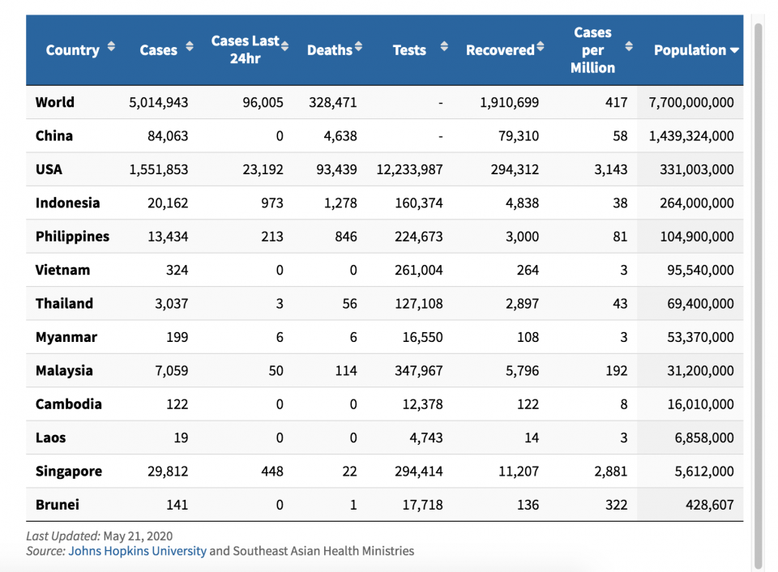
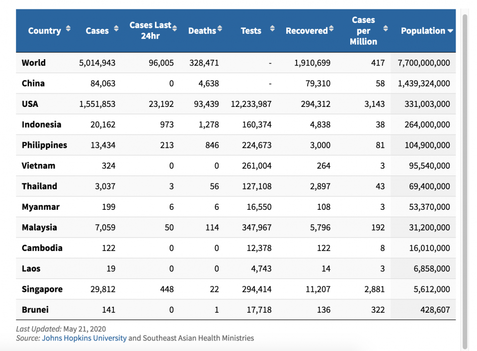

It has been more than a year and a half since the first official lockdown for the COVID-19 pandemic. Filipinos are forced to stay in their homes and avoid direct contact from anyone that may possible have the virus. This has greatly affected and changed the lives of everyone in the Philippines. After months of research from professional scientists, they finally have found a way to fight against the virus. The vaccine has been known as the Pfizer-BioNTech COVID-19 Vaccine, and will now be marketed as Comirnaty (FDA, 2021). Many people all around the world are still feeling skeptical about the vaccine, and the purpose of this website is to convince and educate you about it.
According to Our World in Data, 47.8% of the world's population have received at least a singe dose of the vaccine. 6.7 billion doses have been administered globally, and 20.54 million are now administered each day. However, Only 2.8% of people in low-income countries have received at least one dose.
According to the World Health Organization, around 52.3 Million people living in the Philippines are now vaccinated whole 23 Million of them are full. Ever since the rise of the distribution of vaccines since September 2021, the number of covid cases per day have been significantly reduced by 330%. The rise of the number of deaths have also been stopped and is now in a constant/decreasing rate. This is mostly because of the vaccines effects. There are still many unused vaccines that you can get, especially in Central Visayas with 1.8 million and the amount keeps growing. Get yours now and participate in stopping this pandemic.